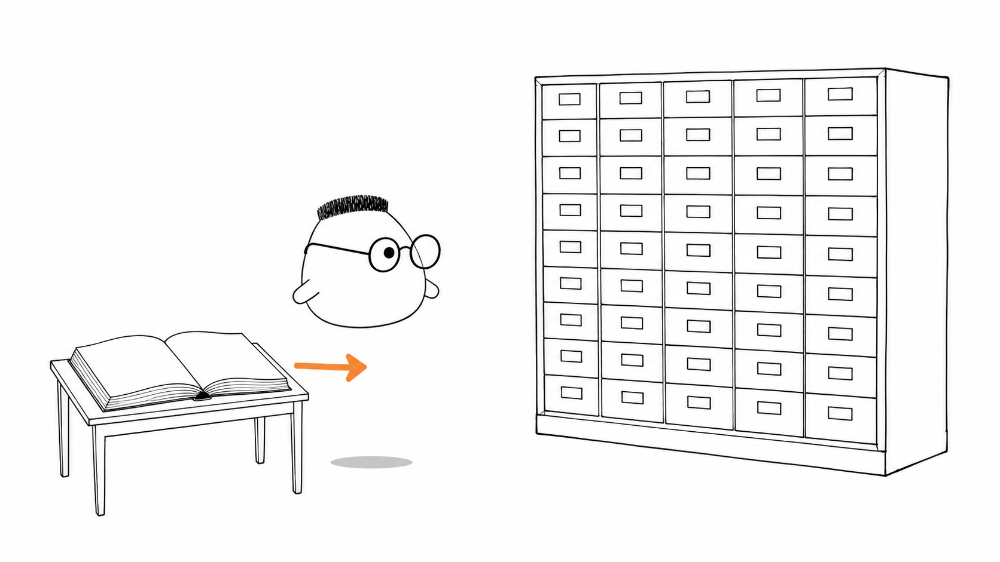
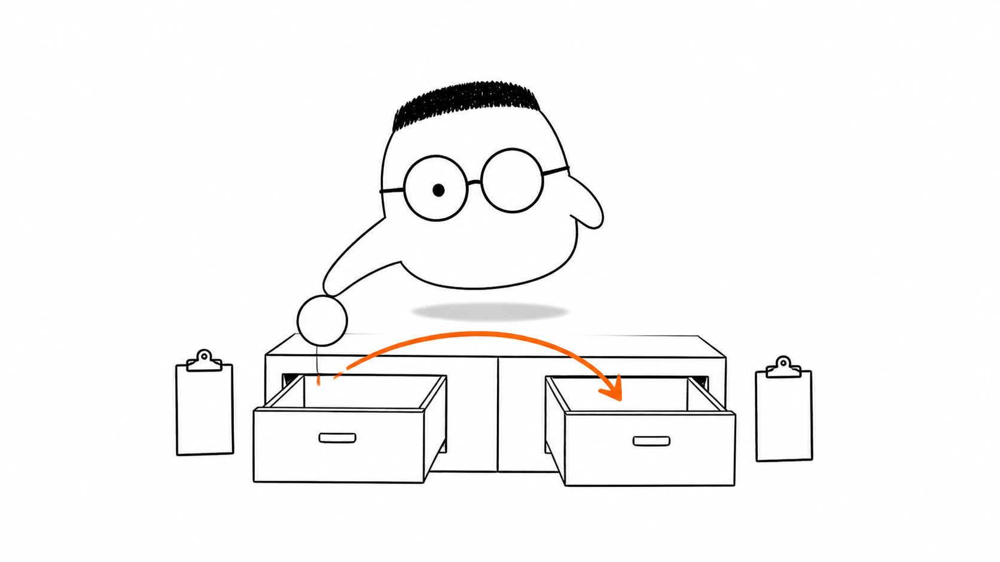
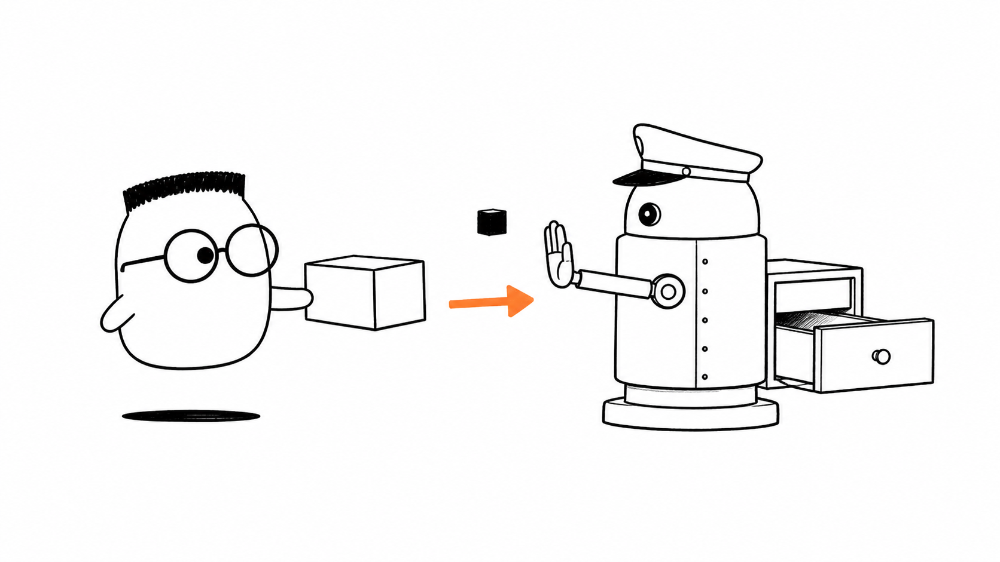

Masalah sehari-hari
Restoran perlu mengingat bahan yang masuk, bahan yang keluar, dan jumlah yang tersisa. Catatan di kertas bisa basah, tertukar, atau hilang saat listrik padam. database menyimpan informasi lintas waktu supaya restoran dapat melanjutkan pekerjaan besok.
Analogi Kuka
Kuka berjalan melewati pintu restoran menuju gudang. Di sana ada lemari berlaci banyak dan buku besar tebal di atas meja. Setiap laci menyimpan satu jenis bahan agar petugas tidak mencampur tepung dengan saus.
Seorang penjaga membaca permintaan sebelum catatan masuk ke buku besar. Ia menolak bahan tanpa label dan menolak catatan yang menunjuk pemasok yang tidak ada.
Peta istilah gudang
Buku besar adalah database. Penjaga dan aturan pengelola buku adalah DBMS. Laci adalah tabel. Baris catatan adalah data. Permintaan membaca atau menulis adalah query. Garis penghubung antarkartu adalah join. Perpindahan bahan yang harus utuh adalah transaksi.
Ilustrasi

Gudang bukan sekadar ruangan penuh kotak. Ia punya susunan, catatan, dan penjaga. Database memberi backend tempat yang dapat diandalkan untuk mengingat keadaan restoran.
Penjelasan konsep
Database biasanya menyimpan data di disk. Disk lebih lambat daripada RAM, tetapi isinya tetap ada setelah program berhenti atau mesin dimatikan. RAM cocok untuk meja kerja sementara, sedangkan disk cocok untuk buku besar yang harus bertahan.
DBMS adalah perangkat lunak yang mengatur penyimpanan dan permintaan terhadap database. Ia mencari catatan, mengubahnya, dan menjaga beberapa orang tetap dapat bekerja tanpa saling menimpa. File teks polos tidak punya penjaga, struktur, dan kontrol konkurensi yang sama.
Tiap jenis isi perlu tempat yang tepat. Angka jumlah bahan masuk ke laci angka. Nama pemasok masuk ke laci teks. Tanggal kedatangan masuk ke laci tanggal. Tipe data membuat bentuk catatan lebih jelas sebelum data disimpan.
Hubungan membantu kita membaca catatan yang saling terkait. Kartu pemasok dapat terhubung ke banyak kartu bahan. Satu bahan juga dapat dipakai oleh banyak pesanan. Model yang jelas membuat hubungan itu mudah dicari tanpa menyalin semua informasi berkali-kali.
constraint adalah aturan yang dijaga langsung oleh database. Penjaga dapat menolak jumlah minus, label kosong, atau catatan yang menunjuk pemasok yang tidak ada. Dengan begitu integritas data tidak hanya bergantung pada kode aplikasi.

Query adalah permintaan untuk membaca atau mengubah data. Join menggabungkan catatan dari beberapa laci berdasarkan hubungan yang sama. Satu laporan dapat menampilkan bahan sekaligus nama pemasoknya tanpa menyalin nama pemasok di setiap catatan.
Transaksi mengelompokkan beberapa perubahan menjadi satu pekerjaan. Jika restoran memindahkan bahan dari rak kering ke rak dingin, catatan keluar dan catatan masuk harus berhasil bersama. Jika salah satunya gagal, keduanya dibatalkan. ACID memberi jaminan bahwa perubahan tetap utuh, konsisten, terisolasi dari pekerjaan lain, dan bertahan setelah berhasil dicatat.
Disk dan RAM
Disk adalah rak permanen yang menyimpan catatan meski gudang tutup. RAM adalah meja kerja cepat yang kosong saat listrik mati. Database mengandalkan disk untuk ketahanan, lalu memakai RAM untuk membantu pekerjaan yang sedang berlangsung.
Relasional dan non-relasional
Database relasional memakai laci berkolom rapi dan hubungan yang jelas. Database non-relasional memberi kotak yang lebih lentur untuk isi yang bentuknya dapat berbeda. Pilihan bergantung pada bentuk data dan hubungan yang perlu dijaga.
Migrasi
Migrasi adalah rencana renovasi rak yang dicatat dan dijalankan bertahap. Struktur gudang berubah dengan urutan yang dapat dilacak, sementara pekerjaan tetap punya cara untuk kembali ke susunan sebelumnya jika perlu.
Index
index seperti daftar isi di sampul buku besar. Penjaga dapat langsung menemukan halaman yang dicari, alih-alih membaca setiap halaman dari awal. Index mempercepat baca, tetapi setiap perubahan catatan perlu memperbarui daftar itu.
Trigger
Trigger adalah bel otomatis. Saat jumlah stok berubah, bel dapat meminta catatan waktu diperbarui atau memberi tanda kepada petugas. Aturan kecil ini berjalan tanpa harus diingat oleh setiap bagian aplikasi.

Diagram alur
Service meminta data melalui repository. Penjaga database memeriksa aturan sebelum perubahan diterima. Data kembali, lalu transaksi dicatat utuh atau tidak dicatat sama sekali.
Contoh mini
Transfer bahan: rak kering -> rak dingin Catatan kiri: satu tepung keluar Catatan kanan: satu tepung masuk Penjaga: dua catatan siap Berhasil: disimpan bersama Gagal: dibatalkan bersama
Seperti kartu pos yang membawa dua catatan sekaligus, perpindahan bahan tidak boleh berhenti di tengah. Kedua sisi menjadi satu hasil, atau gudang kembali ke keadaan semula.
Ringkasan
- Database menyimpan informasi lintas waktu, termasuk setelah program berhenti atau listrik padam.
- DBMS mengatur penyimpanan, permintaan, struktur, dan pekerjaan yang berjalan bersamaan.
- Disk menjaga data tetap ada, sedangkan RAM membantu pekerjaan yang sedang berlangsung.
- Tipe data dan hubungan membuat bentuk catatan serta kaitan antarlaci lebih jelas.
- Constraint menjaga integritas dengan menolak catatan yang melanggar aturan.
- Query membaca atau mengubah data, sedangkan join menggabungkan catatan yang saling terkait.
- Transaksi dan ACID memastikan beberapa perubahan berhasil bersama atau dibatalkan bersama.
- Index mempercepat pencarian, migrasi mengatur perubahan struktur, dan trigger menjalankan aturan otomatis.
Pertanyaan pemahaman
- Kenapa gudang butuh buku besar (database), bukan sekadar tumpukan kertas (file)?
- Aturan apa yang dijaga penjaga laci (constraint)?
- Apa yang terjadi jika satu dari dua catatan transfer bahan gagal?
Mau lebih dalam
Versi teknis membahas cara database bekerja, cara menulis query, dan cara menjaga perubahan tetap aman dengan contoh yang dapat dijalankan.
Disinggung sekilas
Belum dibahas di sini
Kode penuh dan setup database ada di versi teknis.